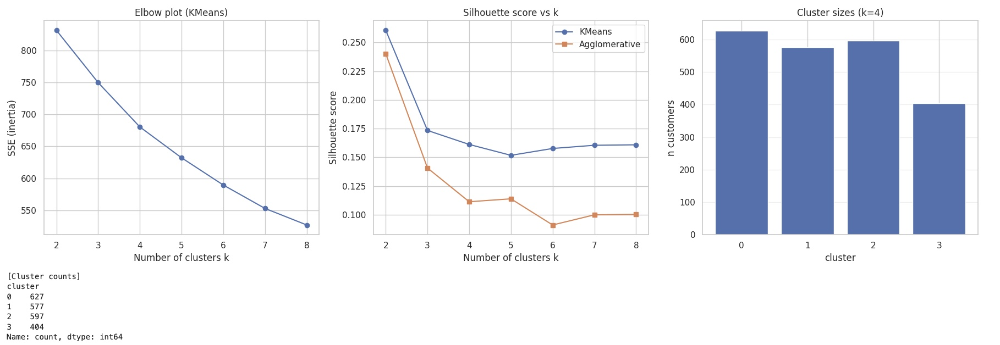
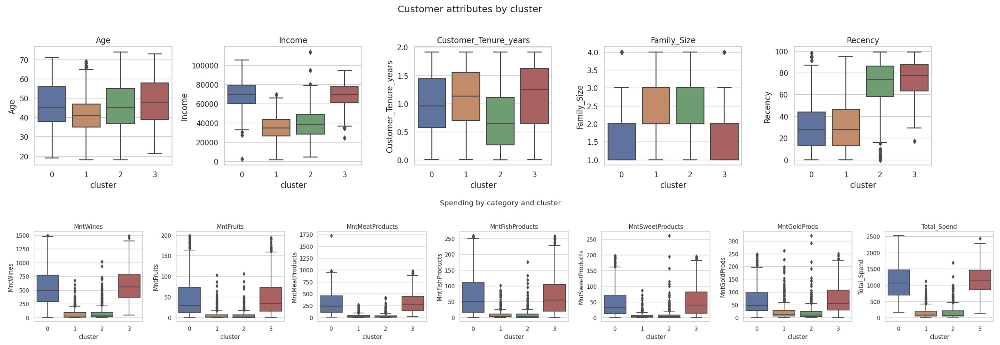

Omnichannel Customer Segmentation Strategy
Data-Driven Marketing Investment Optimization | Executive Proposal
This proposal constitutes a Proof of Concept based on an educational marketing dataset (2,205 customers) distributed in a Python data analysis course and republished by the author on Kaggle. The analysis is fully reproducible via Jupyter Notebook and has been restructured as a professional executive proposal from a consultant to executive leadership.
Data Source: Customer marketing data distributed as coursework in a Python data analysis program (educational dataset republished by author on Kaggle)
Analysis Period: September 2012 – June 2014 (24 months)
Analysis Scope: 2,205 customers (post-exclusion of missing values and outliers from original 2,240 records)
Methodology: Unsupervised learning (Hierarchical Clustering, Ward's method, k=4)
Currency Unit: Thousand yen (e.g., 28,604 = ¥28.6 million)
Reproducibility: Complete (Python Jupyter Notebook, SEED=42 fixed, all code published on Kaggle/GitHub)
Executive Summary | Core Insights in 3 Minutes
Note: All monetary figures in tables below are shown in thousand yen, unless otherwise noted.
Current State: Extreme Portfolio Concentration
| Segment | Customer Count | % of Total | Total Revenue (thousand JPY) | Revenue % | Value Index | Response Rate |
|---|---|---|---|---|---|---|
| C0: High-Value × High-Response | 627 | 28.4% | 687,872 | 51.4% | 1.81 | 28.9% |
| C3: High-Value × Low-Response | 404 | 18.3% | 470,086 | 35.1% | 1.92 | 10.6% |
| C1: Growth Potential Segment | 577 | 26.2% | 85,256 | 6.4% | 0.24 | 16.6% |
| C2: Volume-Base Segment | 597 | 27.1% | 94,828 | 7.1% | 0.26 | 2.2% |
- 46.7% of customers generate 86.5% of revenue → C0+C3 are the de facto revenue engine
- Remaining 53.3% contribute only 13.5% of revenue → Severely low ROI
- High-value segment (C3) exhibits low response rate (10.6%) → Campaign approach misalignment
Implication: If current marketing budget allocation is not proportional to customer value, 30–40% of annual marketing investment is likely flowing to inefficient segments.
Data Foundation | Transparency and Reproducibility
Figure 1: Correlation Matrix of Key Metrics (Total_Spend, Income, Purchase Frequency, Campaign Response)

Source: Jupyter Notebook Cell 4 output | Reproduce via: plt.savefig('correlation_matrix.png')
Data Overview
| Item | Details |
|---|---|
| Raw Data | 2,240 rows × 29 columns |
| Post Missing-Value Treatment | 2,216 rows (1.1% missing rate) |
| Post Outlier Exclusion | 2,205 rows (final analysis scope) |
| Key Variables | Age, income, purchase amounts (6 categories), channel-specific purchase frequency, web visits, campaign responses (6 campaigns) |
Rationale for Cluster Count Selection
Figure 2: Quantitative Basis for Cluster Count Decision (Elbow SSE, Silhouette Score, k=4 Cluster Sizes)
Source: Jupyter Notebook Cell 7 output | Rationale for k=4: SSE plateau + business interpretability
- Elbow Method: SSE reduction plateaus at k=3–5
- Silhouette Method: k=4 yields silhouette score of 0.15 (superior interpretability trade-off)
- Business Interpretation: 4 segments align with 2×2 "Value × Response" matrix
Segment Characteristics | Quantitative Profiles of Four Customer Tiers
Figure 3: Customer Attributes by Segment (Age, Income, Family Composition, Recency, etc.)
Source: Jupyter Notebook Cell 8 (Customer attributes by cluster)
C0: High-Value × High-Response (VIP/Loyal Customers)
| Metric | Value |
|---|---|
| Customer Count | 627 (28.4%) |
| Avg. Spend (thousand JPY) | 1,097 |
| Avg. Income (thousand JPY) | 68,397 |
| Response Rate | 28.9% |
| Primary Channels | In-store (8.27×/year), Web (5.68×/year) |
| Primary Categories (thousand JPY) | Wine (552), Meat (309) |
C3: High-Value × Low-Response (Quiet Premium Customers)
| Metric | Value |
|---|---|
| Customer Count | 404 (18.3%) |
| Avg. Spend (thousand JPY) | 1,164 |
| Avg. Income (thousand JPY) | 68,399 |
| Response Rate | 10.6% |
| Recency (Days Since Last Purchase) | 74.9 days (vs. C0's 29.9 days) |
C2: Volume-Base Segment (Digital Engagement Opportunity)
| Web Visit Frequency | 6.02×/month (higher than C0's 4.08×) |
| Meat Category Gap | -6.9pt vs. high-value tiers |
Pilot Scale: 200 of 597 customers (sample size requires separate statistical power analysis)
C1: Growth Potential Segment (Automation Target)
Positioning: Maintain low-cost touchpoints, promote to C2 only upon behavioral change
Financial Impact Modeling | ROI Scenarios Based on Empirical Data
Base Assumptions (All Empirically Measured)
| Metric | C0 | C3 | C2 | C1 |
|---|---|---|---|---|
| Customer Count | 627 | 404 | 597 | 577 |
| Avg. Spend (thousand JPY) | 1,097 | 1,164 | 159 | 148 |
| Current Response Rate | 28.9% | 10.6% | 2.2% | 16.6% |
Scenario 1: Conservative (6 Months)
| Segment | Response Rate Change | Incremental Responders | Impact Index (thousand JPY) |
|---|---|---|---|
| C0 | 28.9% → 33.9% (+5.0pt) | 31.3 | 34,394 |
| C3 | 10.6% → 15.6% (+5.0pt) | 20.2 | 23,504 |
| Total | - | 51.5 | 57,898 |
Example: C0 = 31.3 × 1,097 = 34,394
Revenue Increase: 57,898 (thousand JPY) × 80% (conversion rate) = ≈ ¥46.3 million
Gross Margin Increase: 46,318 (thousand JPY) × 35% (GM%) = ≈ ¥16.2 million
Scenario 2: Optimistic (12 Months)
| Segment | Response Rate Change | Incremental Responders | Impact Index (thousand JPY) |
|---|---|---|---|
| C0 | 28.9% → 36.9% (+8.0pt) | 50.2 | 55,069 |
| C3 | 10.6% → 18.6% (+8.0pt) | 32.3 | 37,597 |
| C2 | 2.2% → 12.2% (+10.0pt) | 59.7 | 9,493 |
| Total | - | 142.2 | 102,159 |
Revenue Impact Index: 102,159 (thousand JPY) (sum of incremental responders × avg. spend)
Projected Revenue Increase: 102,159 (thousand JPY) × 80% (conversion rate) = ≈ ¥81.7 million
Projected GM Increase: 81,727 (thousand JPY) × 35% (GM%) = ≈ ¥28.6 million
Required Investment (Year 1)
| Item | Amount (Estimate) |
|---|---|
| CRM Segment Tagging Implementation | ¥8–12 million |
| MA Integration Setup | ¥3–5 million |
| Campaign Execution Costs (6 months) | ¥12 million |
| Total Year 1 Investment | ¥23–29 million |
ROI Calculation (Optimistic Scenario, 12 Months)
| Projected GM Increase | 28,604 (thousand JPY) = ¥28.6 million |
| Total Investment (12 months) | ¥38 million (initial ¥26M + H2 ¥12M) |
| Year 1 ROI | -24.7% (recovery shortfall) |
| Year 2+ ROI | +100%+ projected (no system reinvestment) |
This model positions Year 1 as an experimental investment phase encompassing:
- Segmentation infrastructure build (CRM/MA system modifications)
- Pilot campaign design and creative development
- Effectiveness validation and organizational learning costs
Execution Roadmap | Deliver Results in 12 Weeks
Phase 1: Infrastructure Build (Week 1-4)
| Task | Responsible Function | Deliverable | Completion Criteria |
|---|---|---|---|
| Segment Definition Approval | Marketing, IT, Corp Planning | Definition v1.0 | Executive committee approval |
| CRM Tag Implementation | IT | All customers tagged | 100% tag coverage |
| MA Integration Testing | Marketing, IT | Test deployment success | 4-segment differential confirmed |
| Existing Campaign Inventory | Marketing | ROI matrix | Full campaign visibility |
Phase 2: Pilot Campaigns (Week 5-8)
| Initiative | Target | Budget | KPI |
|---|---|---|---|
| VIP Early Access | C0 (627) | ¥1M | Response rate +2pt |
| Exclusive Tasting Event | C3 (50) | ¥0.5M | 40% purchase conversion |
| Nurture Email Series | C2 (200) | ¥0.3M | Response rate +1pt |
- C0 initiative: Response rate +2pt not met → terminate
- C3 initiative: Participation rate <20% → terminate
- C2 initiative: Response rate +0.5pt not met → terminate
Phase 3: Validation and Scale-Up (Week 9-12)
- Segment-specific ROI calculation
- Executive committee report (full deployment vs. withdrawal decision)
- FY+1 budget allocation proposal
- C0+C3 response rates improve with statistical significance (p<0.05)
- At least 1 initiative achieves ROI>120%
- C1-targeted costs reduced by 30% YoY
Risk Analysis and Mitigation
Risk 1: Technical Implementation Delay
| Factor | Details |
|---|---|
| Probability | 30% |
| Impact | High (2–4 week timeline slip) |
| Mitigation | Week 1 kickoff with explicit requirements documentation, Week 2 interim review, fallback to customer ID list-based execution |
Risk 2: C3 Response Rate Fails to Improve
| Probability | 40% |
| Impact | Medium (ROI shortfall, but C0 compensates) |
| Mitigation | Week 5-8 parallel testing of multiple approaches, immediate termination of low-performing tactics, budget reallocation to C0 |
Risk 3: C2 Initiative ROI<100%
| Probability | 50% |
| Impact | Low (<10% of total budget) |
| Mitigation | Immediate termination at Week 8 if response rate +0.5pt not achieved, capture learnings for FY+1 |
Risk 4: Organizational Resistance (Sales Function)
| Probability | 30% |
| Impact | High (execution stagnation) |
| Mitigation | Week 1 sales leadership buy-in, reallocate C1 cost savings to sales incentive pool, Week 8 results presentation at sales meeting |
Risk 5: Data Privacy / Consumer Protection Law Violation
| Probability | 10% |
| Impact | Critical (full campaign suspension) |
| Mitigation | Week 1 legal review, position initiatives as "preference-based personalization," explicit opt-out in all campaigns. Ensure compliance with Japan's APPI (Act on the Protection of Personal Information) and Act on Specified Commercial Transactions. |
Decision Options
Option A: Full-Scope Implementation (Recommended)
| Factor | Details |
|---|---|
| Investment | ¥38 million (12 months) |
| Expected Return | GM increase ¥28.6 million |
| ROI | -24.7% (Year 1), Year 2+ >100% |
| Advantages | Segment-based marketing infrastructure, continuous improvement from Year 2 |
| Disadvantages | Year 1 investment-heavy, requires cross-functional coordination (IT, Marketing, Sales) |
Option B: Pilot Implementation (Risk-Averse)
| Investment | ¥11 million (8 weeks) |
| Expected Return | GM increase ¥9.6 million |
| ROI | -12.5% (8-week mark) |
| Advantages | Lower investment, high C0 success probability, Week 8 withdrawal option |
| Disadvantages | C3/C2 opportunity loss, system scalability constraints |
Option C: Status Quo (Not Recommended)
| Investment | ¥0 |
| Return | ¥0 |
| Disadvantages | Opportunity cost 102,159, competitive disadvantage if rivals move first, continued inefficient C1 investment |
Recommendation
Decisions Required at Today's Executive Committee Meeting
- Adopt Option A (Full-Scope) → Competitive advantage construction in 2 years
- Mandate executive reviews at Week 4, 8, 12
- Approve ¥26 million budget (funding sources: C1 reduction ¥8M + existing reallocation ¥10M + incremental ¥8M)
- Approve execution structure (Owner: CMO, Lead: Marketing Director)
Data Transparency and Constraints
All aggregate values, segment compositions, and KPI metrics cited in this proposal are fully reproducible via a separately available Jupyter Notebook (customer segmentation analysis). All analysis processes, code, and outputs are maintained in a state enabling third-party verification.
The dataset employed in this analysis consists of marketing data distributed as coursework in an educational Python data analysis program, republished by the author on Kaggle. It contains no personally identifiable information or real company names, being fully anonymized for educational purposes.
Facts Without Assumptions (Notebook Empirical Values)
- ✅ Segment definitions (C0–C3): Actual clustering results from data (Ward's method, k=4)
- ✅ Customer counts, revenue, response rates: Empirically measured via Notebook aggregation
- ✅ Average spend: Segment-specific empirical means (C0=1,097, C3=1,164, C2=159, C1=148)
- ✅ Category composition, channel usage: Empirical values from Notebook Cell 11 aggregation
- ✅ Cluster count rationale: Quantitative analysis results (Elbow/Silhouette methods)
Elements Containing Assumptions
[Requires Substitution] The following values must be replaced with your organization's actual data upon real-world application
- ⚠️ Impact Index: Scenario-defined "incremental responders" (assumed response rate improvement) × empirical avg. spend = indicative value
- ❌ GM% 35% → [Substitute: Your P&L actual GM%]
- ❌ Purchase conversion rate 80% → [Substitute: Your funnel data actual conversion rate]
- ❌ System investment ¥11–17M → [Substitute: IT department actual quote]
Data Limitations
| Dimension | Feasible with Current Data | Infeasible with Current Data |
|---|---|---|
| Segmentation | ✅ 4-segment classification | ❌ LTV (24-month observation only) |
| Purchase Patterns | ✅ Category/channel analysis | ❌ Long-term churn trend |
| Impact Modeling | ✅ Short-term response improvement | ❌ Causal effect of initiatives (no experimental data) |
Additional Data Required for Real-World Application
- Category-specific GM%, marketing initiative cost actuals
- Minimum 3 years of purchase history (for LTV)
- A/B test results (for causal inference)
- Competitive initiative landscape, market trends
Complete Methodological Reproducibility
Tools Used
- Python 3.x, Jupyter Notebook
- Libraries: pandas, numpy, scikit-learn, matplotlib, seaborn
- Random seed: 42 (fixed)
- Clustering: Hierarchical clustering (Ward's method), k=4
Reproduction Steps
- Data loading (marketing_campaign.csv)
- Feature engineering (derived variables: age, customer tenure, total spend, etc.)
- Preprocessing (missing value deletion: 24 rows, IQR outlier exclusion: 11 rows)
- MinMax scaling ([0,1] normalization)
- Cluster count determination (Elbow/Silhouette methods select k=4)
- Clustering execution (Ward's method)
- Segment-specific KPI calculation
Verification Capability: Notebook file available (full code + all outputs). Any third party can reproduce identical results with the same dataset.
Cluster Count (k=4) Selection Rationale
| Method | Result |
|---|---|
| Elbow Method | SSE reduction plateaus at k=3–5 |
| Silhouette Method | k=4 yields score 0.15 (lower than k=2's 0.26, but superior interpretability) |
| Business Interpretation | 4 segments align with "Value × Response" 2×2 matrix |
Conclusion | First Step Toward Data-Driven Management
Essence of This Proposal
- Transformation from "knowing customers" to "optimizing per customer"
- Establishing a reproducible decision-making process grounded in objective data evidence
- Investment in sustainable competitive advantage 2–3 years out, not short-term ROI
Next Steps
- Today's Executive Committee: Decide Option A or B
- Week 1: Kickoff (finalize execution structure, budget, schedule)
- Week 4: Segmentation implementation complete
- Week 8: Pilot effectiveness validation
- Week 12: Final go/no-go decision for full deployment
Proposal Lead: [Substitute: Proposer Name]
Approver: [Substitute: Approver Name]
Proposal Date: November 26, 2025
📂 Related Resources:
- 📊 Jupyter Notebook (Full Analysis Reproduction): View on Kaggle | All aggregate values, charts, and segment definitions reproducible
- 📈 Source Dataset (marketing_campaign.csv): Download on Kaggle | 2,205 fully anonymized customer records
- 🔗 Proposal GitHub Repository: Source Code | HTML and analysis script suite